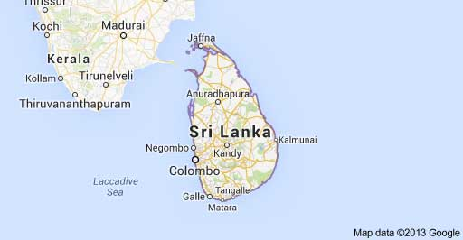
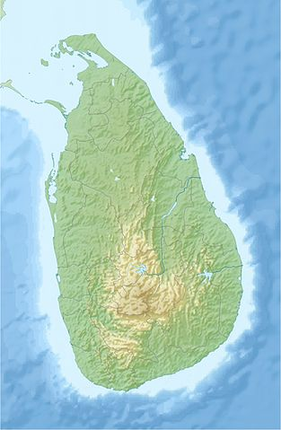
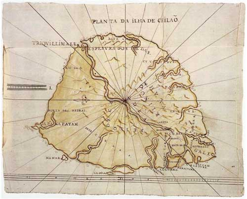
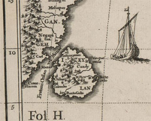
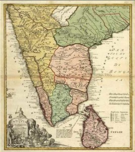

A West Wing clip highlights some issues that make accurate geography challenging. While this was intended as a humorous scene, some people get lost in the political implications, and label this “liberal propaganda.”
In the context of alternate geography, political agendas (if there are any) aren’t the point. History — and how it might continue to influence our maps — is relevant.
Here’s the video:
So, I think we need to look at current maps for modern-day references, and then at old maps to see if our memories are based on them.
People have reported a variety of locations that have moved.
Maybe our “alternate” memories are based on older maps from childhood geography classes, and those maps have been corrected in recent years.
Let’s rule that out, and then dig deeper.
For example, related to our discussion of Sri Lanka’s location — where it is in relation to India — I’d double-check where it is on maps in this timestream. The following map is provided courtesy of Google Maps, (c)2013.

The next is a topological map, courtesy of Uwe Dedering.

So, we know where the country is, and what it looks like, on today’s maps in this timestream.
Then, I’d look at old maps of Ceylon, an earlier name for Sri Lanka. I like to go back as far as I can, and then work forward to the 21st century.
The first map is dated around 1535, by Claudius Ptolemy. To determine the suggested location, a north-south orientation is needed. First, look at where the mountains are, compared with current maps. Then, Indian geographical references must be used. (See http://www.bergbook.com/images/25234-01.jpg for the full map.)
Based on the mountains, I’d guess that this showed Ceylon southwest of India. (Correct me if my reference points are wrong. I didn’t check the smaller islands indicated on that map, and they may suggest a different orientation.)
A map from around 1650 shows only the outline and geography of Ceylon, with no nearby land masses, except very small islands. So, this map isn’t especially relevant to our study of Ceylon’s location in relation to India.
What caught my interest was how different the shape was, in this map. I studied where the mountains are indicated, to get a sense of this map’s orientation. (This is one of several illustrations from Plantas das fortalezas, pagodes & ca. da ilha de Ceilão, a book by a cartographer and illustrator.)

Here’s another map from around 1700 – 1710, by Heinrich Scherer. Relative to India, this map suggests the southeast location indicated on maps in our current timestream. (This actual map came from the Maps Collection at the Library of Congress “American Memory” site.)

A 1733 map shows the same placement.

The really old maps are intriguing, but the earlier the map, the more questionable its accuracy.
It looks as if “alternate geography” memories of Sri Lanka’s location aren’t based on 20th century maps that were recently corrected. As far back as 1700 — and perhaps earlier — Sri Lanka (Ceylon) was represented at the southeast side of India.
This has nothing to do with alternate memories, it all comes down to the specific map projection you look at… The size and location can vary greatly, here is a good website that shows you a comparison of a number of different map styles.
http://www.jasondavies.com/maps/transition/
Thanks, Peter, though I think many of us will disagree with you about maps and alternate memories! Nevertheless, for some, it could be a map issue, so it’s helpful to have references that can help people sort errors, media misstatements, and “Mandela Effect” experiences into appropriate contexts.
As a child, I was interested in geography — naming places and physical features of the planet, and correctly knowing where they were. I recall (no specific idea when) as a child, looking at maps of West Asia — Sri Lanka was *always* southwest of the tip of the Indian subcontinent — and not only lower, but father west in the Indian Ocean, too — and I remember noting its position relative to Madagascar and the East coast of Africa. I had to have seen these maps on multiple occasions.
That position of the island was part of my mental template for all of West Asia, and whenever Sri Lanka came up in the news (mostly during its long civil war), that’s what I would remember. I never questioned that orientation; there was no reason to.
When l saw a map showing the island south*east* of India, and closer to the continental coast, I was more than just surprised. Trying to sort out the cognitive dissonance of two distinct and different memories, I had an almost a physical sensation of trying to mentally conform to this ‘new’ position for Sri Lanka.
I have memories of this same thing happening before over the years — not often, but I’m presented with something I know in my bones can’t be true, or real; then experiencing a physical sensation of confusion and tiredness as I tried holding both ideas about Some Thing in my mind. Eventually the current reality would win out. I’ve tried telling myself to remember, hold on to the dichotomy, but only end up feeling more foggy, spacy, tired.
Some of those Things I recognized and then quickly forgot seemed more important and profound than what the actual position of Sri Lanka is — and why I have no trouble remembering that, I haven’t a clue.
While It’s not Sri lanka (which I thought was somewhere in the middle of the Indian continent- but what do I know)- Orlando, FL has moved some condiserable distance from where it should be, much further south, and a bit to the east. This was looking at recent Google Maps. It was like everything shifted 20 miles to the left one day.
Reality is not what we perceive it to be, a straight line from a to b. It is rather like the life mandala, always changing directions. Everytime anyone makes a decision, things change. However, there is also alternate dimensions, and probably like ours, theirs change too, and sometimes, intersecting happens.
I am truly amazed at some of the changes on Earth based on my memory when talking about the shape, size and location of land masses. Just blows me away (in a good way as I find all of this exciting). I clearly remember that China was bigger than the US. I know this because before there was the internet I studied top 5 lists for all sorts of things (I was born in 1975). One of those things I knew back then was that The biggest countries in order of size were:
1.) Soviet Union/ later Russia
2.) Canada
3.) China
4.) USA
5.) Brazil
I was interested in where the US ranked and number 4 is an easy and crystal clear no question memory/experience. I even remember that if the US didn’t have Alaska then Brazil and the US would trade places making Brazil the 4th and the US the 5th largest.
So I become aware of these “changes” people are reporting after finding out the Berenstein Bears changing. And when I started hearing what others have been finding I was totally shocked to see a somewhat large country named Mongolia sitting between China and Russia. Although my mind was able to accept that there was a small chance that I just missed all of these years but I was very sure that this was a mandela effect situation. Then I looked up the top countries by size as China was now smaller due to Mongolia being there. (I remember the Mongolian Empire with Genghis Kahn but not a present day country and certainly not the 19th largest in the world) Well the list now reads different from the 80’s when I was on top of those statistics. This reality rankings by size:
1.) Russia
2.)Canada
3.)USA
4.)China
5.)Brazil
So not only does China look smaller with Mongolia sitting there but it also lost a place in the top 5 list to the USA. Weird to say the least.
Yes and Korea never ever shared a border with Russia! Being Korean I should know that it stuck out of china where Taiwan now is. Australia was never close to south east Asia. Mongolia was never a country. Alaska was never that huge, only barely bigger than Texas. How is this even possible?! This is driving me nuts
I don’t remember Korea sharing a border with Russia either. I don’t remember what you described though. I’ve been questioning myself on this memory. I became interested in looking at Korea a couple of years ago when I saw an aerial shot of Korea at night and South Korea was full of lights and North Korea was almost completely dark. At that time, I pulled up several photos of North Korea at night and in most of them, there was an outline showing where North Korea was, because the border wasn’t evident on the night photo. I remember both North and South Korea being surrounded by water and being south of Japan. When I look for a similar photo now, I can’t find one. All of the photos now show lights to the north of North Korea.
My father and I from way back, were into gaming. I remember checking maps to play the game New Horizons. I remember a game called Romance of the three Kingdoms and Nobunga’s ambition. Back in our day, China included Mongolia. Australia was not close to the “spice” islands. There was more water between Italy and Sicily.
Not only is geographic locations all scrooged in my opinion. But, so is the population. One example: when did China lose half of a billion people. I would bet on the fact that not long ago China had 2 billion people out of 6.2 billion people on the planet. This was maybe 7-10 years ago. I consider time as an irrelevant creation by man.
I do not know when Ankara became the capitol of Turkey. I had always known of Istanbul(Constantinople) being the place at which the Sultun lived and called the capitol.
And; I would love to know what happened to the Artic. Is the North Pole in Greenlend now? Antartica is still there, but the artic has dissapeared?
Nobunga you say? I always remembered that game as Nobunga’s Ambition like you–(played on Sega Genesis), but it is in fact Nobunaga’s Ambition…according to this reality. There’s the “A” marker right there. I looked up this game a few years ago and was surprised to find out it was actually Nobunaga’s Ambition. I couldn’t believe it was Nobunaga…but I dismissed it as my faulty memory, despite the fact that me can reads real good…Also, I only know of two or three other people who ever heard of Romance of the Three Kingdoms and Nobunga’s Ambition…and they are family. So, if your name is John or Kris and your dad’s name is Charlie, we’re cousins….I know that’s a long shot, but interesting nonetheless.
The Hobbit and Les_G, these comments might also be a good addition to the conversations at my gaming-related article. While this started as a geography topic, the gaming references are important, too.
Thanks. Fiona. I’ll post a Nobunga’s Ambition comment in there.
Fiona,
Although I was able to open the page that you linked for the video game discussion, I hadn’t seen it on the Sitemap (and have just now double-checked rather carefully). I figured that I should let you know, since it seems to have glitched (or been overlooked).
http://mandelaeffect.com/video-games-alternate-versions-from-other-realities
Thanks, Closeted team-E, that’s important information. To be sure people can find the topics that interest them, I need to be sure the Sitemap is working. I may switch themes sooner than I’d anticipated, hoping to address this issue quickly. And, if that doesn’t work, consider different a different sitemap plugin… or go back to an old-school HTML sitemap. Compared with most of my websites, this one has a relatively small number of articles and pages, so I could build a sitemap by hand in an hour or so.
Australia is not supposed to look like that. What’s that weird spike?
Australia is not supposed to be close to -any- land mass, except New Zealand – which should be located northwest, not southeast (let alone that -far- southeast).
The shape of New Zealand is supposed to be closer to the ‘sunken’ portion of it (that you can see in google earth, right under New Zealand itself).
German is not supposed to be that small, Poland is not supposed to be that big! Italy is not supposed to be connected to Sicily (Cicily?).
Australia seems to have been ‘bitten’ by a giant from the top left and bottom, distorting its shape, and some ‘explosion-like’ portions have been added to the top, where it should be smooth.
How is this possible? It shouldn’t be. I can’t fathom how this can be, I only know either I am a real lunatic and should be shot, or something really unbelievable and strange is going on, that I wish I hadn’t been involved with.
It shouldn’t be possible, and yet it’s happening. I can almost guarantee anyone who I might talk about this will insta-label me crazy. I know I am not crazy, but I also can’t accept Australia’s FREAKY shape. It’s not supposed to be spiky and ‘explosive’. It’s supposed to be round, smooth and far away from any land masses, not almost connected to one.
I can’t understand. I don’t have any explanations. I am just completely shocked, and I found out about this just this week. I wish I hadn’t.
The Australia and New Zealand thing is freaking me out, I know New Zealand was North of Australia, I am certain because I am deathly afraid of flying, but I always said, if I had an opportunity I would go to New Zealand, I used to look up places on the internet and I thought New Zealand was so beautiful, I wanted to see it for myself, what the heck is going on, it’s starting to blow my mind.
Hi,
In my memory: New Zealand was one island not two islands and was located north east to Australia, it was not shaped like a boot, the only country shaped like that was Italy. Sicily wasn’t that close to Italy, Sardegna was closer to Italy, northern east of Corsica was pointing north to Nice (France). Japan was east of China, Korea wasn’t there i can’t recall clearly its location but wasn’t north west to Japan. Mongolia was not a country and was part of China. The two islands north west France, Jersey and Guernsey were located close to England. Gibraltar was south Spain, and was the closest erea to Marroco, a logical reason to name the straight between Spain and Marroco, Gibraltar straight… There was no Lesotho in South Africa, the only african country i ever travelled to, in June 2000 and Nelson Mandela died in prison around 1989.
I’m nodding in agreement with several of your memories, Marc. Interesting.
(Also, see Closeted team-E’s comment, which was posted after this… but, at the time, neither of you could see each other’s comments: http://mandelaeffect.com/major-memories/major-memories-comments-13#comment-27167 )
Quick question for anyone. In my previous post I mention Isle of Mann, this is how I remember it (I am aware of Island of Mann terminology also). Now Wikipedia (which I do not trust anymore) says Isle of Man. Which do you remember? Mike H.
That is odd. I haven’t been there, so I can’t swear that it was Isle of Mann, but I did think “Mann” was the correct spelling.
However, Wikipedia (which I don’t trust now, either) says, “The Isle of Man (/ˈmæn/; Manx: Ellan Vannin [ˈɛlʲən ˈvanɪn]), otherwise known simply as Mann (Manx: Mannin, IPA: [ˈmanɪn]), is a self-governing British Crown dependency located in the Irish Sea between the islands of Great Britain and Ireland.”
So, in my case, I was probably reading 19th century (or earlier) references that may have spelled it Mann. (Much of my Celtic and pre-Celtic research includes 19th century literature, which often mixed whimsical ideas and spellings… but with just enough facts to be useful.)
Fiona,
I have been contemplating this thought , much longer than even the ME things we talk about. I have noticed , for me personally I seem to spell words the way they may have been spelled in the middle (or dark ages) ,or even earlier Celtic. I always have and have no idea why, or where it comes from. Residual DNA from ancestors? The strong attraction to certain areas of the world, that I have never been too makes me think of something along those lines also. Obviously this could veer off into non-geography items. But the attraction to places I’ve never been makes me wonder. Mike H.
I just finished reading Closeted team-E’s post, i forgot to mention, in my memory, northern part of Madagascar was roughly 100 km above the equator line and 1200 km east to Somalia coast, some of the islands around (the ones i’m sure Mayotte, Reunion, Mauritius, Comores) were in the same location relative to Madagascar, so they have been moved accordingly.
I apologize for my terrible english, i’m french.
Salut, Marc,
Votre Anglais est parfait — je suis sérieux. Votre description de Madagascar est exactement là où je me souviens (même si je ne sais pas assez sur ses îles voisines).
Quick translation: “Hi, Marc, [para.] Your English is perfect — I mean it. Your description of Madagascar is exactly where I remember (though I don’t know enough about its neighboring islands).”
Marc, Fiona, and Closeted team-E
Count me in, those are almost exact descriptions for me, both post’s , of how it “used” to be for me. Marc’s Jersey and Guernsey descriptions are right on the money, as a kid I had a fascination with those two and the Isle of Mann (Manx Cats), and their flag symbolism always intrigued me. I studied maps of those places from the age of 6 or 7 well into high school. I was VERY familiar with their locations. I always looked at the isles off Scotland, Ireland, England, and Wales. More of those places I have a STRONG attachment to for some reason. I wondered if anyone would ever mention the Straight of Gibraltar. Again, just like Marc’s description, I would put it just a nudge SW of Spain. These are absolutely fascinating to me. Mike H.
Fiona,
I found this on another site——I am not taking credit. Someone else found this, not me. If they post here, I hope they chime in. Now I am not sure, if this is a map perspective thing (I have looked at several, all them show the same). Maybe most Americans are used to seeing an Alaskan map (which doesn’t look right to me anymore either)?? BUT , British Columbia does not look right to me. Alaska goes half-way down the coast? Juneau , Alaska looks very off to me. Again, don’t know what to make of this. Mike H.
http://geology.com/canada/british-columbia-map.gif
Mike, I must say I’m pretty confused/schocked to see the bottom of Alaska halfway down British Columbia. The location of Fairbanks was also surprising to me.
Interesting I got a 404 page does not exist error on that link
That could be related to hotlinking precautions. Try this: http://geology.com/canada/british-columbia.shtml (That’s the right link/map, right, Mike H?)
Yes Fiona, that is the right one. Although strangely, it doesn’t look quite as exaggerated to me, as it did before. Sorry about the late reply, missed this somehow! Mike H.
No problem, Mike! Even after I filter comments, I can’t imagine how people read them all….! LOL
Haiti/Dominican republic: I was looking up the Dominican Republic today, and I was a little suprised by its location. I recall an island with Haiti being east, and Dominican Republic being west. The whole thing flip flopped for me; Haiti is on the west and D.R. Is east. Am I alone on this one?
Same! I could not believe the flip flop, it just happened a week ago! Well maybe two to three weeks ago!
FJ,
I had to look that up. I have to agree, I thought the same as you. Your right , and not alone. I’m actually getting to the point where I don’t even like looking anymore. The whole Caribbean has looked off to me for about 5 years. Cuba (size), Bahamas (proximity) among others. Things just get weirder. Mike H.
Thank you Mike H. for the reply and reassurance. I’m not sure I’ll ever get used to this. Like you, I don’t really like looking at maps these days. I had to stop looking the other day. After noticing Haiti, I saw that two cities I visited in Brazil (which are hundreds of miles apart) have swapped places. The past few days I’ve had an uptick in noticing changes and weird occurrences. So much that I’ve been questioning myself, which doesn’t feel great.
Hi folks,
I got to this different parallel timeline at the end of Sept. 2015. What a difference to the world map! New Zealand used to be NE of Australia for me. Japan was never as far north; the rock of Gibraltar is no longer between Spain and Morraco, ……….and has anyone noticed Norway becoming much skinnier? ? ?
Then – there are a bunch more changes which have already been discussed…. it’s all very fascinating to me. – Mary G.
Not sure where to post this.
I saw a curious reference to Svalbard on tv (3 days ago) that stuck out for me. The host visits the Svalbard coast; the segment in question is about capturing and burying carbon. I looked it up again, just now, to check my facts before writing this post, and the name of the show AND the Svalbard quote have both changed. I know this won’t sound credible. I have no way to prove any of this. Just my notes, but honestly I’m staring to feel crazy…I’ve had literally dozens of changes in the last few days. I had come a long way in accepting all of this, but it feels like I’m back to square one.
Three days ago, the show was called How the Earth Changed History (when you search using this name, the show still comes up).
The quote: “If you happen to have millions of tons of carbon to dispose of, Svalbard seems made for it.”
Today, the show is called How the Earth Made Us.
The quote: “If you happen to have thousands of tons of carbon to dispose of, the geology here is particularly helpful.”
When I heard “Svalbard seems made for it” the other day, I immediately thought of the geoengineering topic that I believe Helene brought up. My impression of the Svalbard mountains is that they look fake. They are too perfect, flat, and repetitive looking.
Ok, Wikipedia says the title was changed for American broadcast. But, the quote is different, that I’m sure of.
Of all the geographical changes, Svalbard is the most shocking. I would swear on my mother’s ashes that it didn’t exist when I was a kid. I remember coloring in the maps (my favorite part of geography class!) and I have no recollection of Svalbard. The name sounds like something you’d see in a fantasy book, game, or TV show, a place filled with horned-helmet-wearing warriors riding fierce battle yaks. In fact, I’d be disappointed to learn that they don’t actually do this. There just has to be SOME reality where battle yaks are a thing!
Battle yaks, lol!
Ditto on Svalbard Vivienne. If you have a chance, image search “Svalbard mountains.” The tops are weirdly pyramid like, very fake looking IMO.
Ok here is one, this was on another site—-so wasn’t me that noticed. But I just do not remember that Eastern part way out by itself. http://www.mapsofworld.com/india/maps/india-map.gif
Anyone else think it’s odd? I considered myself to be pretty decent at geography, I look at maps all the time. Mike H.
Hi Mike H. I tried your link, but I received “The website declined to show this webpage HTTP 403” error. Are you still able to go that link? Respectfully: Mr.Michael.A
Mr.Michael.A, you also tried my alternate link in that thread, right? (See http://mandelaeffect.com/history-explain-alternate-geographical-memories#comment-29116)
Or, were you referring to some other link we need to update?
Mike H.,
Yep, that’s new. India has always stopped at Bangladesh.
This stinks, I used to be good at Geography. Now I have to learn a whole new globe, lol.
Cultural India stops at Bangladesh but political India extends far beyond.The northeastern states are the oriental section of India,racially and by religion the natives are different from the mainland,they are mongoloid with buddhist and christian faiths,wheras main india is hindu with a small % of muslims, of caucasian and dravidian race including various shades of blend.
In the 1980s, I sponsored a child in Sri Lanka and corresponded with her. To learn more of her country when i first started sponsoring her, I looked up Sri Lanka on a map and would often look at it on my globe and wonder how the sponsored child was doing.
Sri Lanka was a landlocked country north of India and sharing a border with Iran and Afghanistan. It was a desert country.
I was unaware that anything had changed until reading this article.